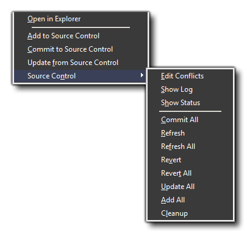

Using Source Control Management with
GameMaker: Studio
Once you have everything setup correctly,
GameMaker: Studio has its own set of tools for working with
Source Control.
When working with your game in a source controlled setup, it is
important that you follow the same steps all the time when
creating, committing or reverting files in your game. To make
things easier, below you can find a brief overview for the three
main procedures that you will need to work with.
Adding New Files
When creating a new resource for your game (whether it be a
room, a sprite or a time line), there are a couple of steps that
you should always take to ensure that it is correctly versioned in
your source control repository:
- Create the resources by adding the scripts, objects, sprites
etc...
- Save the project as the resources do not exist outside of the
IDE and this will add them to the SCM repository for
committing.
- OR run/test the project which will also add the resources to
the SCM project repository for committing.
Now that you have added your resources to the repository, you
can continue working on them as before, with each save or test run
of the game updating the files to be added to the repository.
however, just adding them does not actually commit the
changes. This is explained in the following section.
Committing Files
Adding files (as explained above) only marks the files as "to be
added" to your source control repository but doesn't actually save
them there. So we must now commit the files in order for the
repository to hold these files. This step is very important as
without it, your repository will not be up to date and you cannot
use any of the source control features.
To commit files to the repository, follow these simple steps:
- Right click on the resource in the resource tree and select
Source Control -> Commit All (you can also select
Commit directly from the menu but that is for individual
files and also we have a lot more than just your new files to
commit, as you will see).
- You will now get a commit dialog. At the top you can add a message which
will be logged along with your commit so that others can get a
general idea of what you committed, and below this you will see all
files that you are going to commit.
- You will see that there are a lot of files in there, with most
of them being the config files and images. You can choose just what
to commit here by deselecting items in this dialog. The left panel
shows file names and the check-boxes for deselecting and selecting
them, while the right panel shows you the status of the file
(A=added, M=modified, D=deleted,
?=un-versioned, C=Conflicted and
!=Missing).
- For this first commit, it is recommended that you do not
deselect anything and commit everything, adding in as a message log
something like "initial commit". Now press "Ok".
- You will now see in the compile messages it is adding and
committing to the repository. This can take a while depending on
your connection and the amount of files. The first commit can be
quite lengthy but you are looking for the message "Refreshing
SVN Status...finished" which tells you that everything has been
done and you can continue to work on the game.
Now that you have done your initial commit, the process should
be more or less the same from now onwards, with you editing
something, saving the project and then committing the change(s) to
the repository, either using the commit all or simple
commit commands from the right click menu of the resource
tree. Note that you can right click on files in the list and
revert, if need be. This is useful when files become missing
because of conflicts, or even just accidental modifications. Also
note that the actual status information is dependent on the SCM
system being used. The ones mentioned above are specific to SVN but
may not match up with Git or Mercurial.
Reverting Changes
One of the principal uses for source control is the ability to
"roll back" your game to a previous state and undo any changes that
have been made. This can be of particular importance when you have
added something that breaks the game or have made some design
changes that you want to go back and add in. in situations like
this you will need to use the Revert option.
The following steps outline how to revert to the last committed
version of a file stored in the repository:
- Right click on a resource you wish to revert and click
"Source Control -> Revert".
- You will see a message appear in the compiler form at the
bottom of the IDE saying "Reverted 'xxxxx.gmx'".
- Your resource is now back to the previously committed
version.
Please note that this is not reversible, unless you are
reverting from an already committed change. If you make some
changes without doing a commit and then revert, once you have
reverted there is no going back to your non-committed version.
The GameMaker: Studio Interface
Once your game file has been added to your source control
repository you will see that a new set of icons have been added to
each resource on your resource tree. These are the GameMaker:
Studio source control indicators and are used to give you a
graphic representation of the versions of each of your resources
and while working on your project will look a bit like this:
 Obviously the
exact icons you see will depend on your project and what you have
been working on, but you still need to know what they all mean! The
list below shows each one and explains their significance:
Obviously the
exact icons you see will depend on your project and what you have
been working on, but you still need to know what they all mean! The
list below shows each one and explains their significance:
Updated: This shows that the resource is updated to the
current version as stored in the repository.
Added: This icon means that you have created a new resource
and it has to be added into the repository. This will happen
automatically when you save your progress.
Modified: When you change a resource in any way this icon
will appear beside it to let you know that it is now different to
the last version in the repository.
Not Versioned: If you see this icon it means that the
resource is not recognised by the SCM solution and should therefore
be added to the repository. There is an "add" command provided for
this in the right-click menu from the resource tree.
Conflict: If you get this icon it means there is a conflict
between two resources. This can only usually happen when two or
more people work on the same source and cannot be resolved through
GameMaker: Studio. For that you will have to use your
windows SVN Client to merge the two files or manually edit the
*.gmx files.
You can work on your game as normal, creating, changing and
adding resources as necessary knowing that these changes are only
being done to your local copy of the game, not the versioned
copy stored in the repository. As mentioned in the sections above,
a game with source control active also has an extra set of commands
available from the right click menu of the resource tree. These new
options deal with source control and look like this:
 As you can see
there are two most common actions that need to be performed:
- Add To Source Control: This will add a resource to the
repository. When you see the "Not
Versioned" icon showing you will need to use this action.
- Commit To Source Control: This will commit the selected
resource to the source control repository. If you have a folder
selected then everything in that folder will be committed,
otherwise it will only commit the selected resource. When you
commit something you will also be prompted to add a comment where
you can briefly explain what you have added or changed, and this
will then be stored along with the updated version of your
project.
- Update from Source Control: This will update the
selected resource (or resources if you have a folder selected) in
your local copy of the project from the repository. Any changes,
additions or conflicts will now show up in GameMaker:
Studio
Below those actions, you also have a further sub-menu titled
"Source Control". There are further actions that you can perform
listed here:
- Edit Conflicts: Edit any conflicts that have been found
using the SCM interface set in the SCM
Preferences.
- Show Log: This will show the log file for your SCM
solution so you can see recent activity.
- Show Status: Shows a status window for your SCM
solution.
- Commit All: Commits everything into the
repository. You will be prompted to save your work to the local
copy before committing.
- Refresh: This simply refreshes the source control icons
beside the resource (or resources if you have a folder selected) to
reflect the current versioned status.
- Refresh All: This simply refreshes the status icons
beside all the resources.
- Revert: With this action you revert the selected
resource, or resources if you have a folder selected, to the
last version you have updated to from the repository.
- Revert All: Use this to revert all changes that you have
done back to the last version you have updated to from the
repository.
- Update All: This will update all resources in your local
copy of the project from the repository. Any changes, additions or
conflicts will now show up in GameMaker: Studio.
- Add All: Adds all resources in the resource tree that
have not yet be versioned to the repository.
- Cleanup: Cleans up your SCM files, refreshing status and
icons and checking for conflicts etc...
It should be noted that there is no option to rename any
resource as this is handled internally. So, when you have source
control enabled and you rename (for example) a sprite,
GameMaker: Studio will automatically change and update your
local copy of the project without any need for your intervention.
these changes will then be added to the repository on the next
commit.
Also note that you can add your own commands to this menu at any
time through the Source Control
Preferences.
Conflicts
If you have any conflicts when committing your added files, you
can select the Edit Conflicts option from the context menu
(see the section above). This will open up the Conflicts
Editor, where you can decide what to do. This editor will list the conflicting files
on the left and present you with a number of options for what to
do, available from the buttons on the right:
- Edit Conflict: Edit any conflicts that have been found
using the SCM interface set in the SCM
Preferences.
- Resolved: Mark the conflict as resolved.
- Use Theirs: Update the conflicted file to use the other
version.
- Use Mine: Update the conflicted file to use the version
being committed.
- Refresh: This simply refreshes the current versioned
status.
When finished you can close the Conflict Editor and then
re-commit the conflicted files as normal.
© Copyright YoYo Games Ltd. 2018 All Rights Reserved